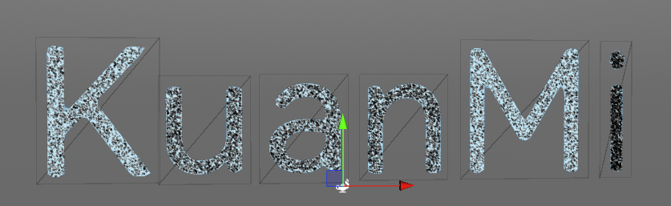
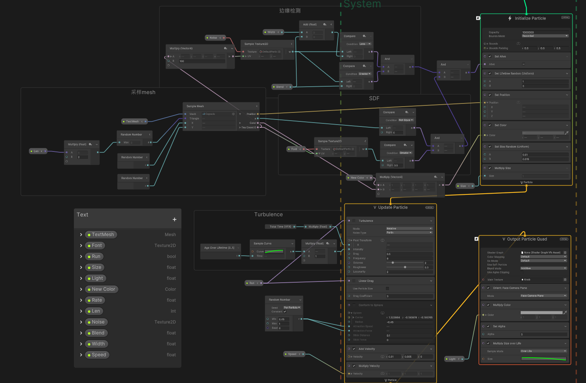

基于TMP与VEG的实时文字粒子消融效果
概述
产品现有一需求，要运行时更改文字且添加消融与粒子消散。
虽然不算很复杂，还是记录一下。
想了下从TMP文字的SDF图来着手应该是比较不错的方案。
TMP消融Shader
这里先看下TMP的原始shader，就是采样SDF图，再根据是否要轮廓、阴影等效果加上对应的代码。
那就很简单了，采样个噪声图，根据时间clip一下，再取个宽度，step后给个颜色就完事了。
这就简单贴一下
float noise = tex2D(_NoiseTex, input.atlas * 100).a;
float w = noise - _BleedCompensation;
clip(w);
float isEdge = step(w - _Width, 0);
......
faceColor += isEdge * _OutlineColor;
faceColor.a = saturate(faceColor.a);一开始忘了去限制alpha，导致溢出

粒子
粒子用的是VEG，大体思路是
- 用脚本把TMP的mesh和字体SDF贴图传进去
- 用表面模式去随机采样，拿到位置和UV以及颜色。
- UV就可以直接采样SDF了，然后小于指定参数的粒子就消灭掉
到这里粒子就是生成在文字上的了。

然后是消融
- 传入同样一张噪声图，一样的参数去把边缘取出来。非边缘部分的粒子同样就直接消灭
- 然后放出来一些参数去配置大小和颜色。
- 最后随便给个Turbulence和速度就完活了

要根据当前文字数量可以动态调整要生成的粒子数量，避免浪费。
最后用Timeline去统一配置下动画就完工。

VFXBinderBase
为了以后方便使用，参照VFXBinderBase的写法，写个VFXTMPBinder来自动绑定TMP的Mesh
using TMPro;
using UnityEngine;
using UnityEngine.VFX;
using UnityEngine.VFX.Utility;
namespace DefaultNamespace
{
[VFXBinder("GameObject/TextMeshPro")]
public class VFXTMPBinder : VFXBinderBase
{
public TextMeshPro Target;
public string Property { get { return (string)m_Property; } set { m_Property = value; } }
[VFXPropertyBinding( "UnityEngine.Mesh") ,SerializeField]
protected ExposedProperty m_Property = "mesh";
public override bool IsValid(VisualEffect component)
{
return Target != null && component.HasMesh(m_Property);
}
public override void UpdateBinding(VisualEffect component)
{
component.SetMesh(m_Property, Target.mesh);
}
public override string ToString()
{
return string.Format("Mesh : '{0}' -> {1}", m_Property, Target == null ? "(null)" : Target.name);
}
}
}
优化
这里有个小问题就是比较小的字的网格也比较小，但随机取样没有考虑这一点，所以导致每个字上的粒子数量密度不均匀。
解决的办法就是去改TMP源码，写网格的时候比如在UV里在加上当前网格的大小，然后粒子采样时用这个参数去过滤掉多出来的粒子就可以了。
基于TMP与VEG的实时文字粒子消融效果
https://www.kuanmi.top/2025/03/18/TMP-VEG/